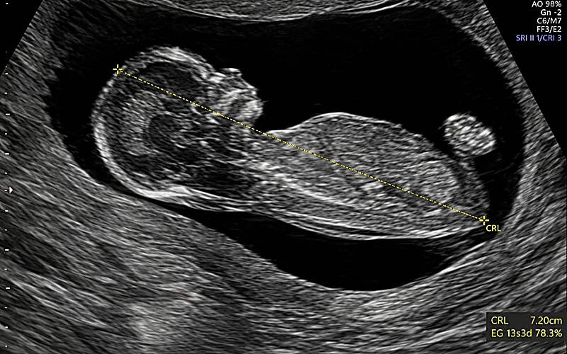
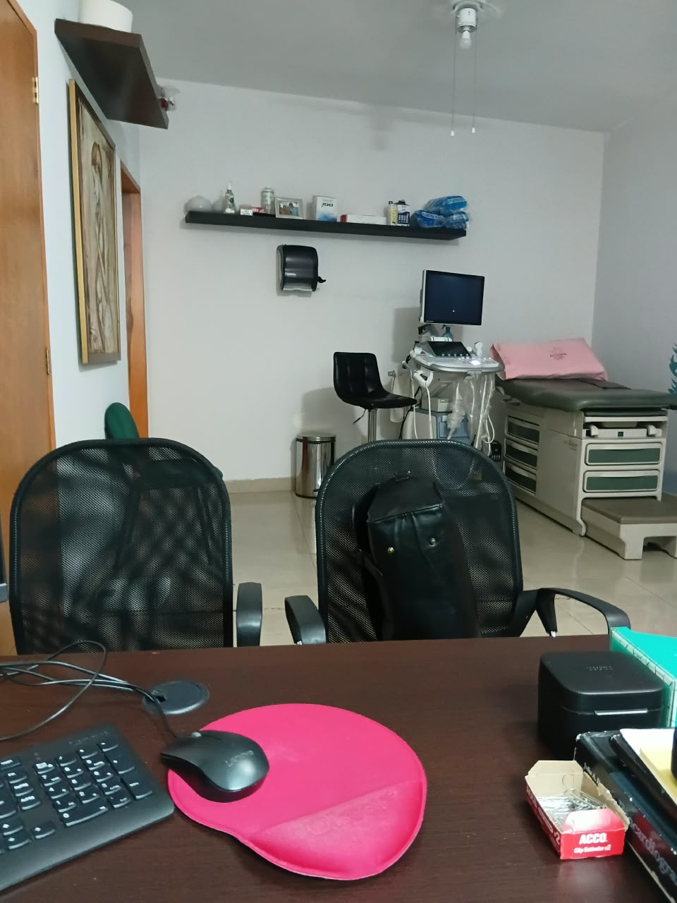
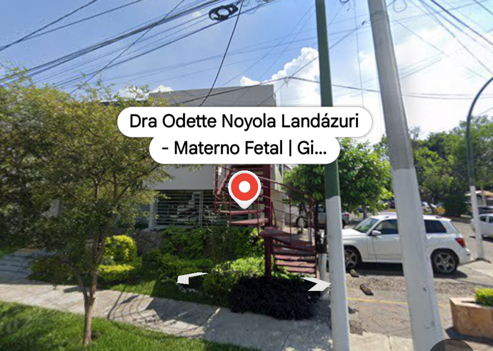

Ginecóloga en Guadalajara
Ginecología, Obstetricia y Materno Fetal
Dra. Odette Noyola Landázuri · Especialista Certificada CMGO y FMF
Atención ginecológica integral y seguimiento de embarazo con tecnología diagnóstica avanzada en Chapalita, Guadalajara.
Servicios y Precios
Ultrasonido incluido en cada consulta. Sin costos sorpresa.

Ultrasonido Estructural
Semanas 18.0 – 24.0 (Ideal: 20-22)Evaluación anatómica completa del feto órgano por órgano: sistema nervioso central, corazón, cara, extremidades y columna vertebral.

Tamizaje Genético 1er Trimestre
Semanas 11.0 – 13.6Medición de translucencia nucal, hueso nasal y cálculo de riesgo de aneuploidías (Síndrome de Down, Edwards, Patau).

Ultrasonido de Tercer Trimestre
A partir de la semana 28Valoración del crecimiento fetal, Doppler feto-placentario, líquido amniótico y bienestar fetal general.

Chequeo Ginecológico Completo
Preventivo Anual · Incluye Papanicolaou y UltrasonidoChequeo anual preventivo: incluye valoración médica personalizada, exploración de mamas, toma de Papanicolaou y ecografía ginecológica en tiempo real.

Consulta Ginecológica y Control
Diagnóstico, Tratamiento y SeguimientoDiagnóstico y tratamiento para desajustes del ciclo, infecciones, ovario poliquístico (SOP), miomas, anticoncepción (DIU / implante) y control prenatal.
Consultorio
Testimonios y Reseñas de Pacientes
Blog
Ginecóloga en Guadalajara: Guía de Chequeo y Consulta
Conoce qué incluye una consulta integral con la ginecóloga en Chapalita: Papanicolaou, ultrasonido ginecológico, mamas y prevención.
¿Cuándo y por qué realizar el Ultrasonido Estructural?
Conoce por qué las semanas 18.0 a 24.0 son la ventana diagnóstica ideal para la revisión anatómica de los órganos del bebé y cómo prepararte.

Tamizaje Genético de Primer Trimestre en Guadalajara
Explicación médica sobre la medición de translucencia nucal, hueso nasal y cálculo de riesgo para Síndrome de Down (semanas 11.0 a 13.6).

Signos de Alarma en el Embarazo de Alto Riesgo
Guía de síntomas críticos que no debes ignorar: dolor de cabeza intenso, zumbidos, sangrado o disminución de movimientos fetales.
¿Tienes dudas? Aquí las resolvemos
Encuéntranos en Chapalita, Guadalajara

Dirección
Av. Niño Obrero 1538, Chapalita Oriente,
C.P. 45040, Guadalajara / Zapopan, Jalisco
Teléfono / Citas
Horario
Lunes a Viernes: 9:00 a.m. – 8:00 p.m.
Sábados: 9:00 a.m. – 2:00 p.m.
Urgencias: 24/7